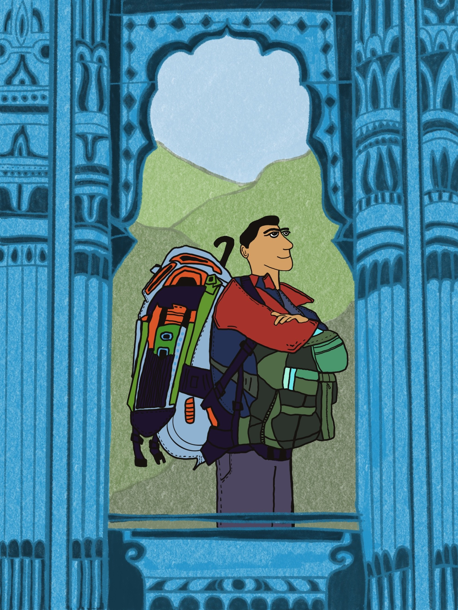
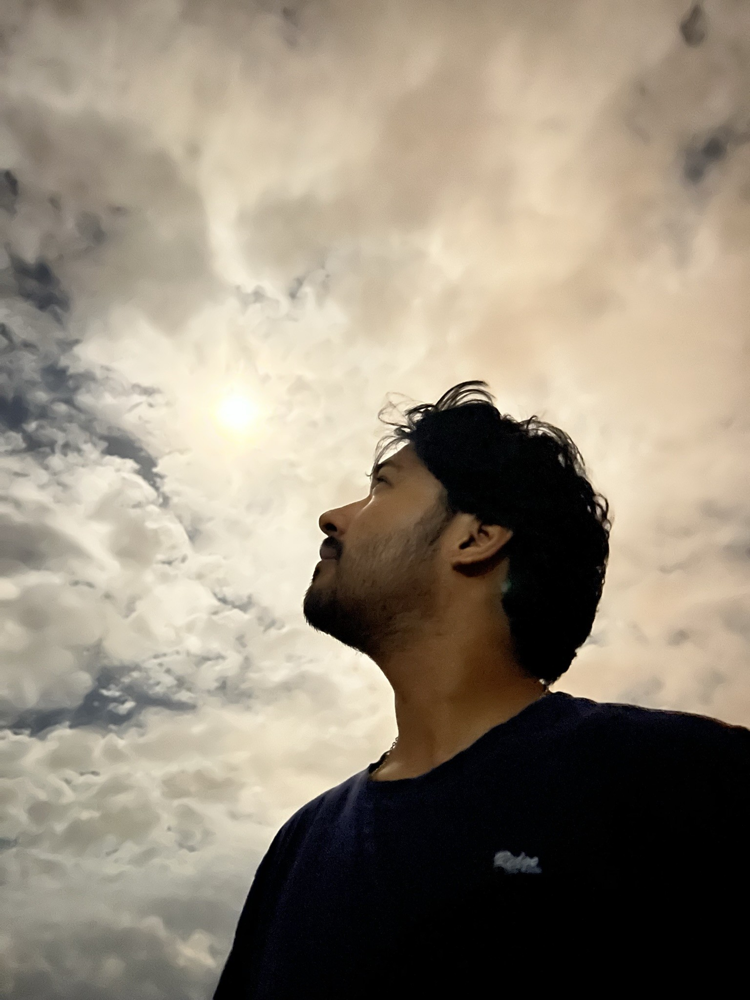
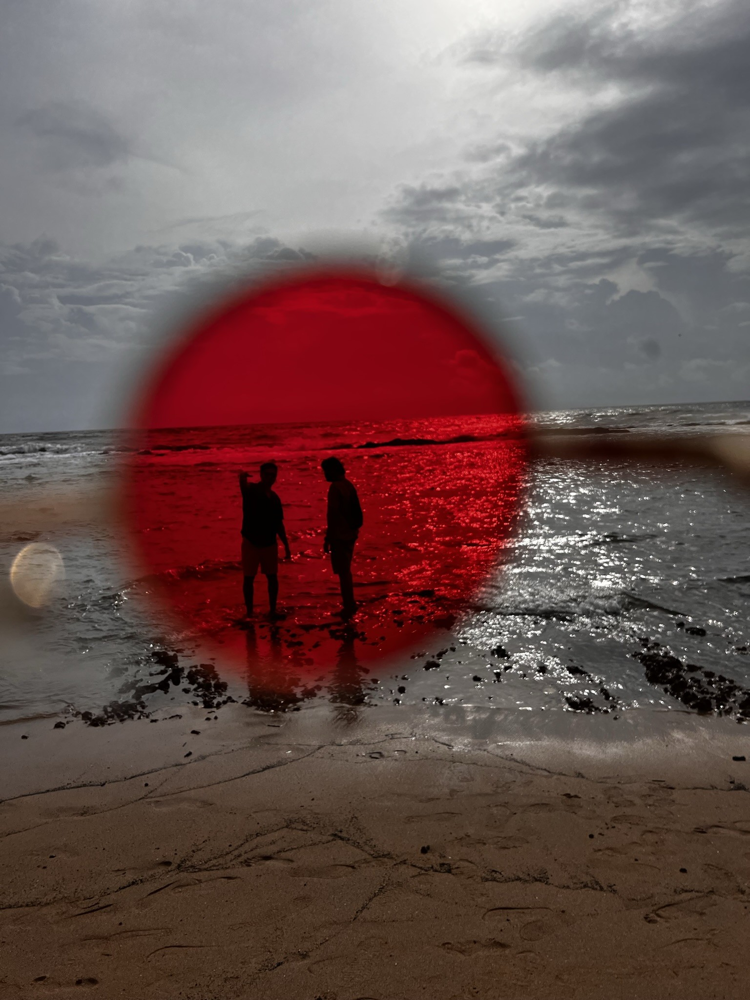
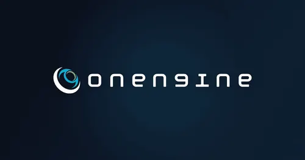
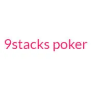

ABOUT_ME.TXT — Notepad
About me
Designing since 2016, curious since forever.
I’m a UX and product designer with a B.Tech in IT, which means I think about systems as much as screens. I’ve worked across compliance AI, travel, energy, aviation and enterprise SaaS, usually as the person who untangles the messy middle between what a business needs and what people actually do.
Today I design at Onengine.ai in Ireland._
C:\VIPUL\MY PICTURES — A glimpse of who I am



Tip of the Day
“To be yourself; everyone else is already taken.”— Oscar Wilde
My journey
Where I’ve been
From research roles in India to leading product design for AI start-ups in Ireland.
C:\VIPUL\CAREER — Exploring
| Role | Company | When |
|---|---|---|
| UX DesignerNOW |  Onengine.ai | Feb 2026 – Present |
| Senior Product Designer |  RedOrange.ai RedOrange.ai | Jul 2024 – Dec 2024 |
| UX Consultant | Code Craft Technology | Dec 2020 – Dec 2023 |
| UX Researcher |  9Stacks | Apr 2019 – Jul 2019 |
| UI/UX Designer | CybuzzSC Infotech Pvt. Ltd. | Jul 2017 – Jul 2018 |
| Freelance UI/UX Designer & Researcher | Beyond Boundaries | Apr 2012 – Present |